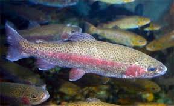

About Trout

Trout are a prized catch in the Salt River, known for their beautiful coloring and delicious flavor. Rainbow and Brown trout are the most common species found in these waters.
Trout prefer the colder, well-oxygenated sections of the river. They are often found in areas with moderate to fast current and plenty of cover from rocks and undercut banks.
Best Fishing Spots: Look for trout in the upstream sections where the water is cooler, near waterfalls, and in deep pools with rocky bottoms.
Best Bait: Fly fishing with nymphs and dry flies is highly effective. Live worms and small spinners also work well.
Arizona Fishing Season Chart
| Season | Activity Level | Notes |
|---|---|---|
| Spring (Mar-May) | High | Peak fishing as water warms |
| Summer (Jun-Aug) | Moderate | Early morning best |
| Fall (Sep-Nov) | High | Good as temperatures cool |
| Winter (Dec-Feb) | Low | Slow activity, cold water |